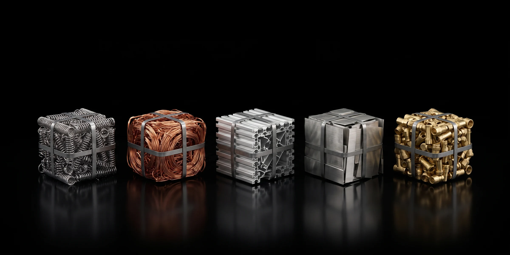

Export
Australian recycled steel, in a box
Processed spring steel and sorted non-ferrous metal, packed into containers at our own facility, delivered to the wharf and documented for your forwarder. Samples before commitment. A statement on every load.
Ferrous content~99%processed high-tensile spring steel
Monthly volume130–250 tyear-round production, not seasonal
Per 40-ft container~25 tof baled steel, nominal (varies with bale density)
Containers a year62–120arithmetic from the monthly volume

How it ships
Packed here, counted here, documented here
- Baled for the box. Dense bales that stack and count. Loose loading available for buyers who prefer it.
- Containerised on site. Loaded at North Geelong, not at a third-party depot.
- Delivered to the wharf. Victorian ports; freight leg arranged with your forwarder or ours.
- Documented. Load statement per container: source stream, process, weighed output, bale count, container number.
- Samples first. A physical sample to assess before any commercial commitment.
Straight answers for buyers
What we can and cannot tell you
What we can tell you
- Exactly where the metal came from and how it was processed
- Ferrous content and contamination as it leaves our line: around 99% on both
- Current availability and what we can commit to monthly
- Bale count and container number per load
What we do not claim
- Independent laboratory testing or chemical composition analysis
- Moisture testing or certified bulk-density figures
- Fixed bale dimensions: they vary with the press cycle and are confirmed per order
- Volumes the plant does not produce
Buyers are welcome to run their own assessment on a supplied sample. The full export offer is available in English, Vietnamese, Chinese and Hindi.

Non-ferrous too
Copper, aluminium, brass and stainless in the same box
Sorted non-ferrous lots can be containerised alongside steel or shipped on their own once a commercial quantity is accumulated. Same statement, same weighbridge, same record.
Export enquiry
Destination port, container preference, monthly volume and whether you have a forwarder. We will come back with availability and a sample.